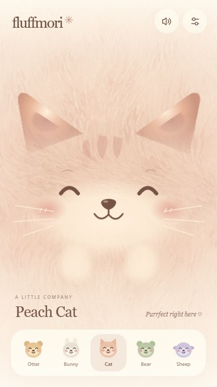
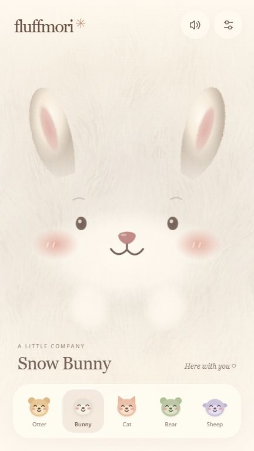
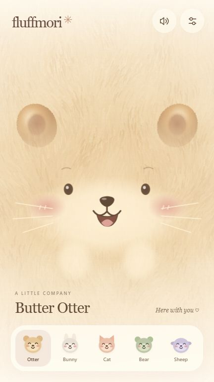
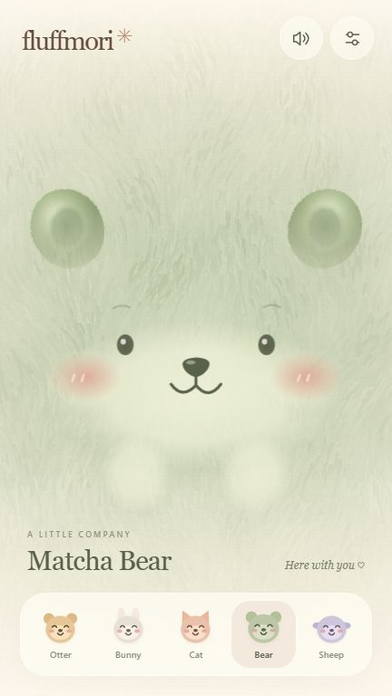
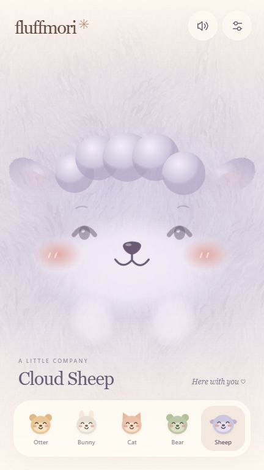
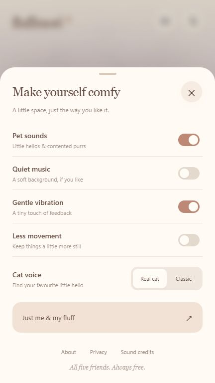
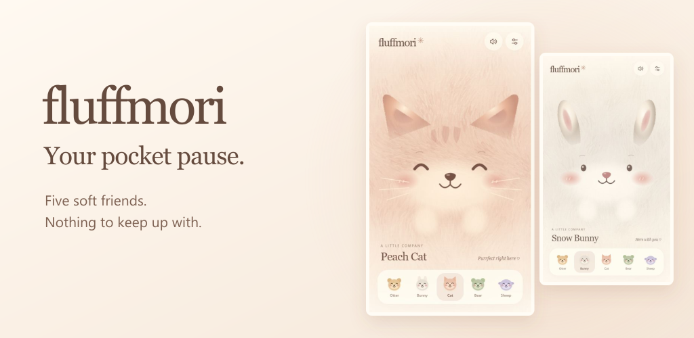

← 返回 App 列表

fluffmori
Your pocket pause.
Fluffmori: Pocket Pets · Android 1.0.0 · 测试预览版
五只毛绒伙伴，全部免费。英文、离线，无广告、内购或 App 内打赏。
目前没有上传 Google Play。
代码测试、浏览器体验、签名与资源核对已完成。真实 Android 手机、耳机和扬声器试听尚未验收。新安装默认 Classic 猫声；在 Settings → Cat voice 选择 Real cat，可试听真实猫录音。
先听听这只猫
下面是真实猫录音；完整的摩擦声、呼噜淡入淡出及旧版 Classic 对照，请进入试玩体验。
Kerzoven / OpenGameArt · CC0 · 已处理音量和循环接缝，仍需主观试听。
实际运行画面
以下来自真实浏览器运行，展示与 Android 包一致的界面资源；不是 Android 真机截图。

触摸会回应
Snow Bunny
Butter Otter
Matcha Bear
Cloud Sheep
声音与设置Google Play 宣传图

隐私说明 · 返回 App 列表